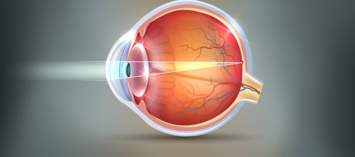

Kindergarten-Alter
Kinder-Sehtest, abgestimmt auf Kindergartenkinder – ohne Buchstabenkenntnis durchführbar.
Kinder & Schule
Heute kann man Kurzsichtigkeit bei Kindern verzögern. Sie als Eltern oder Großeltern haben es jetzt in der Hand.
Kurzsichtige Augen sind größer als normalsichtige Augen.
Im Volksschul-Alter.
Die Vergrößerung der Augen führt langfristig nicht nur zu dickeren Brillengläsern, sondern erhöht ab dem 60. Lebensjahr das Risiko einer Augenerkrankung. Auch nach dem 60. Geburtstag will man scharf und deutlich sehen. Bei stärker Kurzsichtigen wird jedoch trotz aktueller Brille die Sehleistung signifikant schwächer: Lesen können, Autofahren dürfen, dem Hobby nachgehen oder Sport betreiben wird dann nur mehr eingeschränkt möglich sein – und das für die folgenden Jahrzehnte.
Wir sehen die Folgen hoher Kurzsichtigkeit jeden Tag. Dank Wissenschaft muss das heute nicht mehr sein.
Kurzsichtigkeit ist grundsätzlich nur ein zu großes Auge, also nicht krank. Erst wenn die Kurzsichtigkeit zunimmt und das Auge immer größer wird, entstehen mit der Zeit Augenkrankheiten – nicht bei jedem, aber das Risiko nimmt stark zu. Daher macht es Sinn, den Beginn zu verzögern oder das Wachstum zu bremsen: schlicht die richtige Vorsorge.
Ja und nein. Mit dem Laser wird die Korrektur – die Brillenstärke – in die Hornhaut gelasert. Sie sehen damit für ein paar Jahre ohne Brille und ohne Kontaktlinse scharf; danach benötigen Sie wieder eine Brille oder Kontaktlinse. Das Auge selbst bleibt aber zu groß und ist daher auch nach dem Lasern gefährdet.
Weil auch eine zu schwache Brille das zu starke Wachstum der Augen steigert.
Am besten noch bevor Kurzsichtigkeit auftritt – also mit dem 5. bis 6. Lebensjahr. Oder zumindest sechs Monate nach der ersten Brille.
Ihre Gene haben zwar auch einen Einfluss auf die Kurzsichtigkeit – das ist unveränderbar. Sie können aber Folgendes tun:

Schnittbild eines Auges – Darstellung aus unserer Beratung.
Fällt das Lesen schwer oder ist die Schrift unleserlich, werden oft Intelligenz- oder Konzentrationsprobleme, Leseschwäche, Rechtschreibschwäche, ADHS oder Legasthenie als Ursache vermutet. Selten denkt man zuerst an die Augen – vor allem, wenn herkömmliche Sehtests nichts ergeben haben. Sehtests für Kinder werden meist nur in der Ferne durchgeführt, die Sehprobleme liegen aber in der Nähe.
Spezielles Augen-Training oder die optimale Brille sind hier die Lösung. Viele internationale Studien und unsere jahrelange Erfahrung haben deutliche Verbesserungen aufgezeigt – holen Sie sich Ihre zweite Meinung.
Kinder-Sehtest, abgestimmt auf Kindergartenkinder – ohne Buchstabenkenntnis durchführbar.
Sehtest für Volksschul-Kinder, Sehtest mit Landolt-Ring und Farbtüchtigkeits-Test.
Kurzsichtigkeits-Vorsorge-Sehtest: am besten mit 5 bis 6 Jahren oder sechs Monate nach der ersten Brille.
Kinderbrillen aus unserem Sortiment – passend ausgewählt und präzise zentriert. Zum Sortiment
Fragen beantworten wir Ihnen gerne auch am Telefon: 01 734 83 78 (= 01 SEH TE ST). Auf Wunsch ruft Sie der Optometrist zurück.